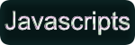

|
 |  |
|---|
Final Project: Salvage Co.
How to Play
In my game "Salvage Co. you, the player, take the role of an intersteller trash man. When you load in a Space Station will be to your upper left. Pressing the Space bar will cause the ship to move in the direction of your mouse. You can move around the universe collecting wreckage, which will earn you money. You can see your balance in the top left of the screen. Going up to a Space station and Pressing "e" will allow you to enter the station. Once inside you can buy upgrades to help you collect even more trash.
Upgrades
The first upgrade is to increase your tractor beam size. Every purchase of this upgrade increases the distance you will be able to pick wreckage up from. THe second upgrade down is to activate your Short Range Radar. This will place a red ring around every peice of wreckage, allow you to spot them much more easily. The third upgrade is an increase to your wreckage processing efficiency. Every peice of wreckage colledted gets you anywhere from 10 to 100 $. This is weighted heavily towards 10, enough that the average is somewhere around 10. Each purchase in increasing your efficiency increases the average of your gains per peice by 5.
GPS
You, as the player, have three different GPS cordinated located in the bottom right of your screen. The top most cordinate is your Unviersal location. The world your ship resides in is made up of many tiles. Each tile is identified by an X and Y. Moving one up and one right from spawn moves you from (0,0) to (1,1). The second cordinate can be seen next to a green (or red) light. That light lights up green when a space station has spawned in your current tile, and red when no space station exits the tile. Underneath and to the right of this light are the SS cordinates, which tell you the location of the Space station of the tile. THe final and lowest set of cordinated are your ships current cords for that tile.